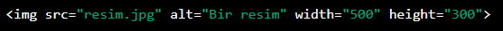

Img etiketi, HTML kodunda bir resmi belirtmek ve görüntülemek için
kullanılan bir etikettir. Bu etiket, sayfanın belirli bir yerine bir resim
yerleştirmeyi sağlar. img etiketinin iki önemli parametresi vardır: src ve
alt.
Src parametresi, resmin dosya yolunu veya URL adresini
belirtir. Bu parametre olmadan, tarayıcı resmi bulamaz ve görüntüleyemez.
Alt parametresi, resim yüklenemediğinde veya
görüntülenemediğinde yerine geçecek bir alternatif metin belirtir. Bu
parametre, erişilebilirlik için de önemlidir, çünkü görme engelli
kullanıcılar için ekran okuyucuları tarafından okunabilir.
Ayrıca img etiketinin bazı diğer parametreleri de vardır, bunlar
şunlardır:
width: Resmin genişliğini belirler. height: Resmin
yüksekliğini belirler. title: Resmin üzerine gelindiğinde
görüntülenecek bir başlık metni belirtir. wstyle: Resim için CSS
stilleri belirler.
Localden Resim Ekleme:
İnternetten Resim Ekleme:

Farklı Klasöreden Çıkarak Img Çağırma: